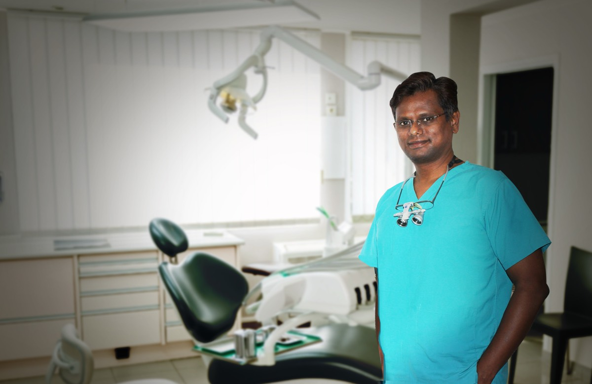

By Prof. Dr. M. Vijjaykanth | May 2026 | 5 min read

Introduction
One of the most common questions I hear from patients at Sriram Dental, Nanganallur is: "Doctor, should I go for aligners or braces?"
As India's first SureSmile Aligner Key Opinion Leader and a certified Invisalign provider — with over 25 years of orthodontic experience — I've treated thousands of cases with both systems. Here's my honest comparison to help you decide.
What Are Clear Aligners?
Clear aligners (like SureSmile or Invisalign) are custom-made transparent plastic trays that gradually move your teeth. They're virtually invisible, removable for eating and brushing, and changed every 1-2 weeks as your teeth shift into position.
At Sriram Dental, we use South India's first PrimeScan digital scanner to create precise 3D models of your teeth — no messy impressions needed.
What Are Traditional Braces?
Traditional braces use metal or ceramic brackets bonded to your teeth, connected by wires that apply pressure to move teeth. They're fixed (non-removable) and adjusted every 4-6 weeks by your orthodontist.
Head-to-Head Comparison
| Factor | SureSmile Aligners | Traditional Braces |
|---|---|---|
| Visibility | Nearly invisible | Visible (metal) or semi-visible (ceramic) |
| Comfort | Smooth plastic, no wires poking | Can cause mouth sores initially |
| Removable? | Yes — for eating, brushing, occasions | No — fixed for entire treatment |
| Treatment Time | 6-18 months (varies) | 12-24 months (varies) |
| Cost in Chennai | Higher (varies by case) | Lower (varies by case) |
| Clinic Visits | Every 2-3 weeks | Every 4-6 weeks |
| Food Restrictions | None (remove to eat) | Avoid hard, sticky foods |
| Oral Hygiene | Easy — remove and brush normally | Difficult — need special brushes |
| Best For | Adults, professionals, mild-moderate cases | Complex cases, teens, severe misalignment |
When I Recommend Clear Aligners
- You're an adult professional who needs a discreet solution
- Your case is mild to moderate (crowding, gaps, minor bite issues)
- You want the flexibility to remove for important meetings or events
- You prioritize comfort and easy oral hygiene
- You're disciplined enough to wear them 20-22 hours daily
When I Recommend Traditional Braces
- You have severe crowding or complex bite problems
- You're a teenager (compliance with removable aligners can be challenging)
- Your case requires significant tooth rotation or vertical movement
- Budget is a primary concern
Why SureSmile Specifically?
Not all clear aligners are equal. SureSmile (by Dentsply Sirona, USA) uses advanced digital treatment planning that I've been trained on in Germany. As India's first SureSmile KOL, I've seen how the precision of their system delivers predictable results — especially for adult cases.
Combined with our PrimeScan digital scanner and in-house CBCT 3D imaging, we can plan your entire treatment digitally before a single tray is made.
The Bottom Line
There's no universally "better" option — it depends on your specific case, lifestyle, and budget. The best approach is a consultation where I can examine your teeth, take a digital scan, and recommend the most effective treatment for YOUR situation.
At Sriram Dental, Nanganallur, I offer both options and will always recommend what's clinically best for you — not what's most expensive.
Ready to Straighten Your Teeth?
Book a consultation to find out if aligners or braces are right for you.
📞 044-43592202 | 💬 WhatsApp: 6385105240